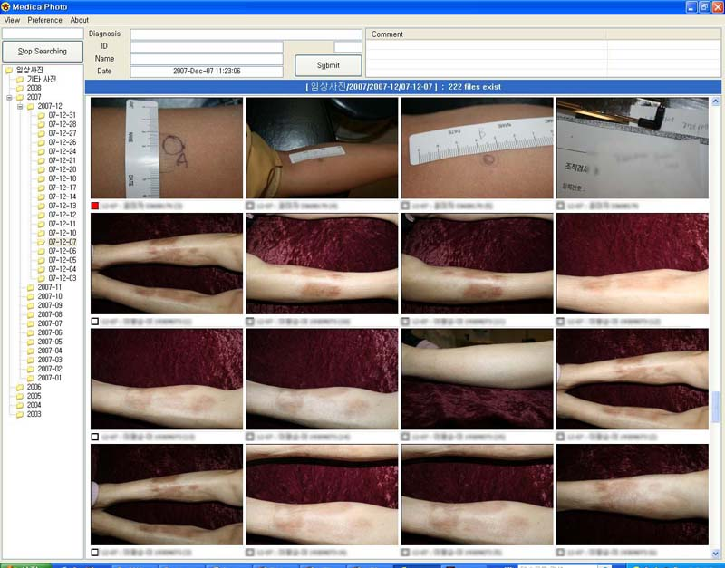

What is MedicalPhoto ?
MedicalPhoto is a non-commercial medical image management program.
MedicalPhoto has been developed for dermatologists. But it also can be used by plastic surgeons and dentists. This program was developed for use in dermatology at the Asan Medical Center in 2007. As 200-300 clinical photos were captured daily, it was developed as an easy and efficient photo management tool. Organizing clinical photos involves a series of repetitive tasks. Given the volume of accumulated clinical photography over the years, locating a particular photo in Windows is time consuming. Photos can be found within 1 second in MedicalPhoto, based on the built-in database. MedicalPhoto includes ICD-10 diagnosis as well as diagnosis of most cases documented in dermatology textbooks. A user can also define a diagnosis or procedure name if the diagnosis is not defined as a reserved word, and tag photos with it. MedicalPhoto supports multiple monitors; therefore, 2-3 monitors can be used to enable comparison of photos. MedicalPhoto employs server-client structure, permitting access from any of the numerous computers in your office.
